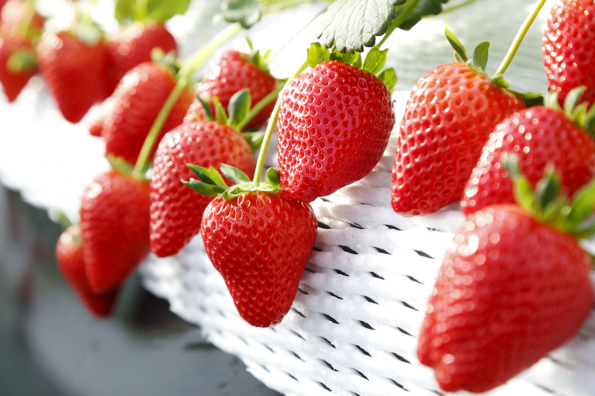
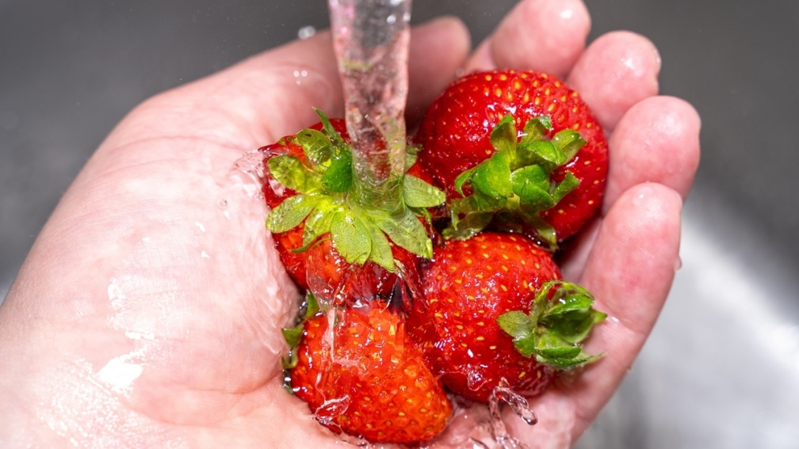

草莓
水果皇后
草莓，又名洋梅、紅梅、地梅或草果，為薔薇科多年生草本。形狀如雞心，紅似瑪瑙，果肉鮮嫩多汁，酸甜爽口，營養價值很高，含豐富維他命Ｃ，有幫助消化的功效，也被人們譽為「水果皇后」。

用途
草莓的鮮紅果肉及酸甜的美味很受歡迎。果實可食用，亦可製成果醬及草莓酒。

挑選與實用方式
選取草莓時須注意成熟度，因為一但離枝，成熟度便終止，故選購草莓時要挑選色澤鮮紅、個體飽滿者為佳。食用前清洗時先不要急著把蒂、梗去除，否則清水滲入後會使草莓吃起來滋味盡喪，更將流失大量的維生素Ｃ。正確的清洗方法是將草莓放在籃內，在清水下慢慢沖洗，瀝乾後在摘除果蒂。
資料來源: